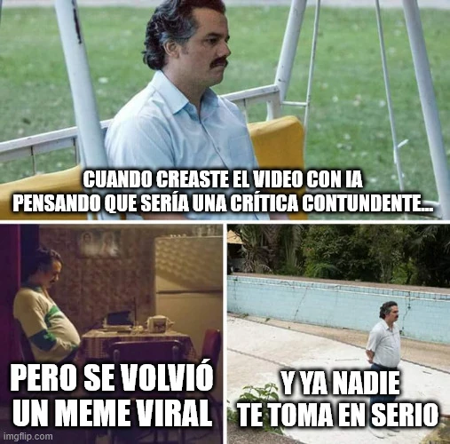

estrategIA #78 ·
La crítica que tomó otro camino
El contexto
Las imágenes de espera y soledad representan a quien pierde el control de su mensaje. El número analizaba comunicación política audiovisual con IA: una pieza concebida como crítica puede circular por su comicidad y terminar debilitando la seriedad de quien la publica.
Publicado en: estrategIA #78 De Trump a Macron: cómo la IA reinventa la comunicación política audiovisual
Leer el texto de la imagen
CUANDO CREASTE EL VIDEO CON IA PENSANDO QUE SERÍA UNA CRÍTICA CONTUNDENTE... PERO SE VOLVIÓ UN MEME VIRAL Y YA NADIE TE TOMA EN SERIO
Marca de la herramienta visible en el original: imgflip.com.